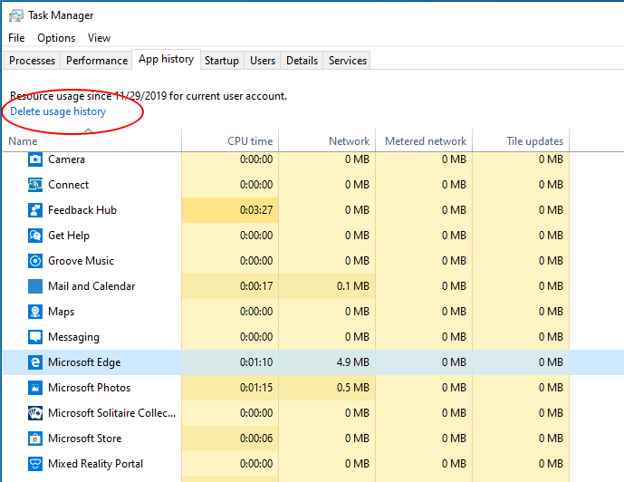
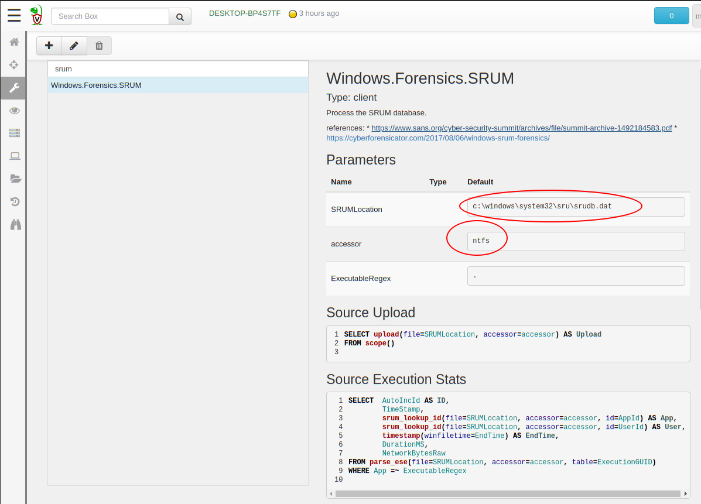
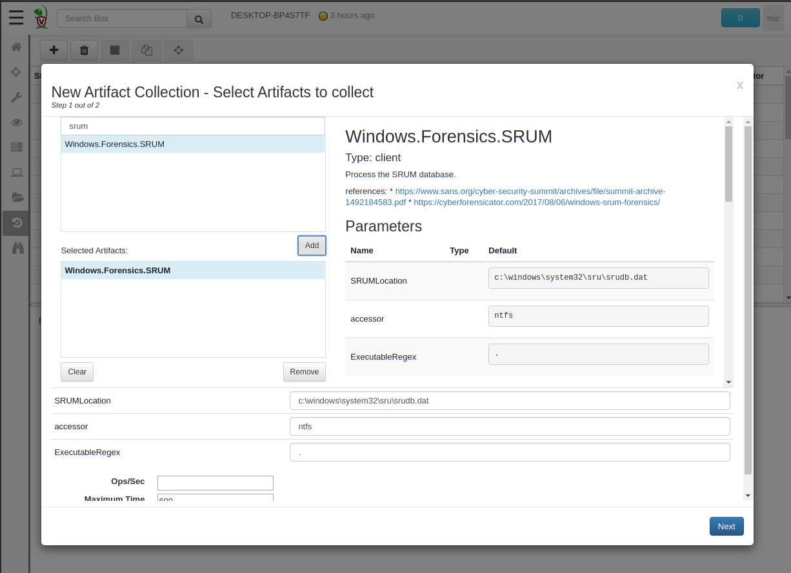
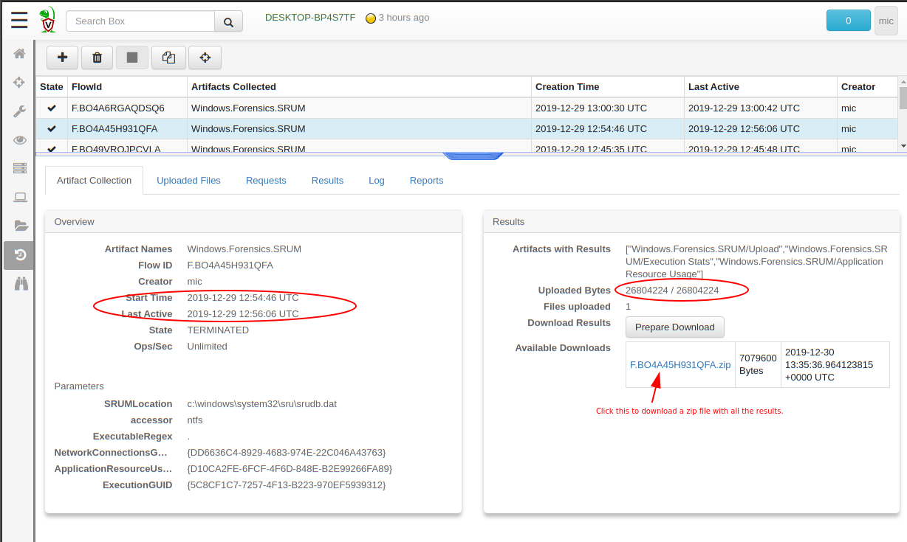
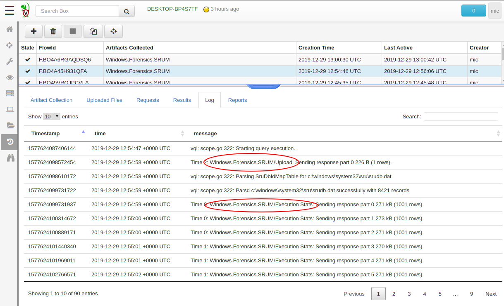
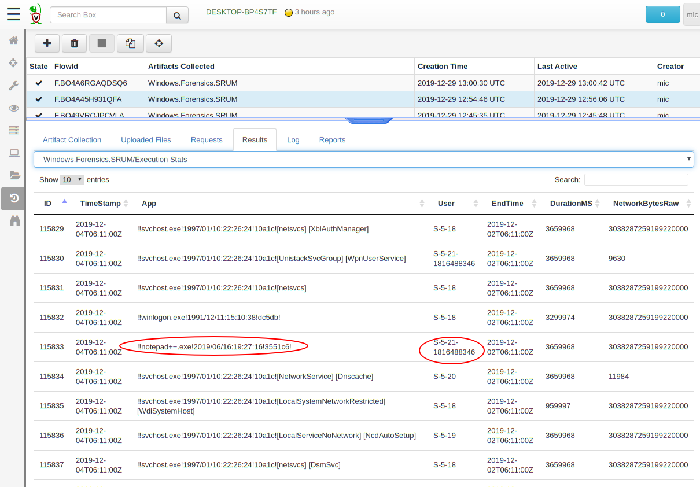
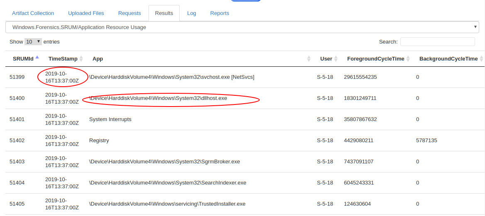
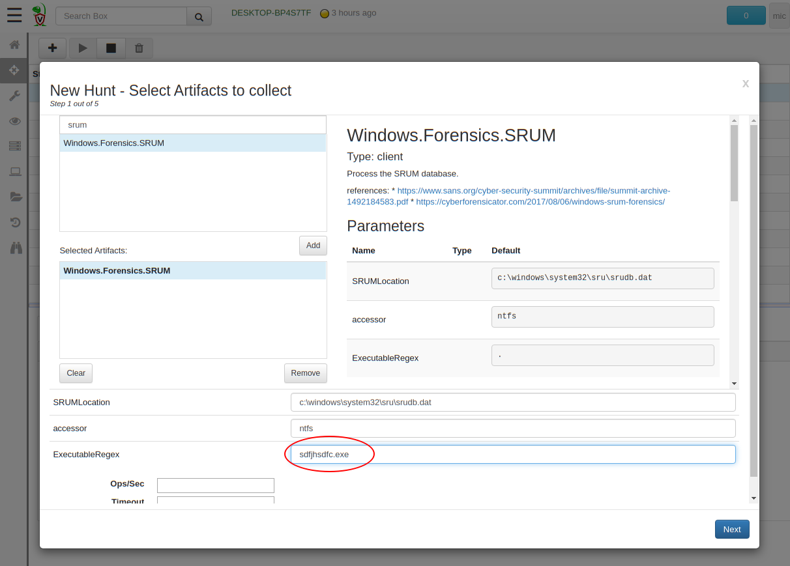
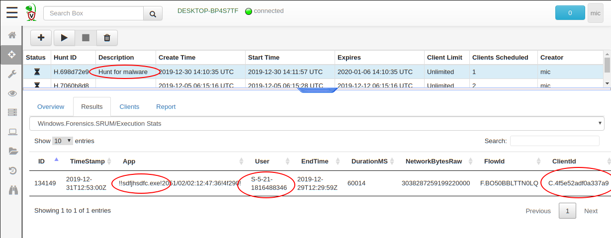

Commonly in many incident response scenarios we need to gather evidence of program executions. For example, a phishing email delivering malware was sent to a user — did the user click on it? Did the malware run? was the email forwarded to any other users?
One of the most useful sources of evidence of execution on Windows is the System Resource Usage Monitor (SRUM). It was first described by Yogesh Khatri in the seminal paper “Forensic implications of System Resource Usage Monitor (SRUM) data in Windows 8”.
SRUM is a feature in modern Windows systems which collect statistics on execution of binaries. The information is stored in an Extensible Storage Engine (ESE) database. ESE is Microsoft’s proprietary single file database format, acting similarly to SQLLite, as a default storage engine for many applications — including the SRUM database.
As from the 0.3.7 release of Velociraptor, an ESE parser is built into the client, allowing VQL artifacts to directly query ESE databases. This opens up the exciting possibility of extracting and querying information from the SRUM database directly on the endpoint.
Although this post will not go into detail on SRUM itself (This is covered in detail elsewhere), I will describe how Velociraptor’s SRUM artifact can be used to hunt efficiently across many thousands of endpoints to collect evidence relevant to DFIR investigations.
Have you ever noticed the windows task manager’s “App History” tab?
The Task Manager App History tab
This tab shows running counts of many applications, broken by user that ran them, including network traffic, and total CPU time. Where does the information come from?
It turns out that the SRUM database is stored within tables inside the ESE database at %windir%\System32\sru\SRUDB.dat.
Let’s examine Velociraptor’s Windows.Forensics.SRUM artifact

The artifact contains several sources — examining a different table within the SRUM ESE database. As can be seen, the ESE database is parsed using Velociraptor’s raw NTFS parser since it is usually locked while the system is running. The artifact allows filtering for a specific application name by regular expression.
The SRUM database actually contains many tables collecting different runtime telemetry. Some of these tables are not publicly documented but may still contain valuable information. It is worthwhile inspecting the raw database file using an external tool (e.g. Nirsoft **ESEDatabaseView**). The Windows.Forensics.SRUM artifact will by default upload the raw ESE file to the server as well as parse it.
To demonstrate the artifact, I am now going to collect it from one of my endpoints.

I simply search for my endpoint in the GUI, then click* “Collect More Artifacts” *and search for **SRUM** in the search box. I then add this artifact and click “**Next**” to launch it.

The above shows that the endpoint took around 80 seconds to collect the entire artifact. This includes uploading the 28MB SRUM database, parsing some of the tables in it, and uploading the parsed results.

Viewing the logs generated by the executing query give an indication of how the query is progressing.
Let’s inspect a sample from the “Execution Stats” source

We get some interesting information, such as the time an application ran (this is determined by the EndTime and DurationMS — the **Timestamp **column actually refers to when the ESE record was written which may be some time later), the user who ran it, and the duration it was executing. Sometimes the information also includes valid network transfer count which might be useful for some investigations (e.g. exfiltration).
This artifact source stores cumulative information about the running executable. Therefore it can not be used to determine exact start time (The Timestamp field corresponds to when the record was written to the ESE database). The advantage here is that the full path is provided, making it easy to search for executables running from unusual locations (e.g. temp folders and network drives).

Sometimes we need to determine which endpoint in our fleet has run a particular binary — perhaps with a unique name. For example, a phishing campaign might launch a trojan malware with a specific name.
To simulate this I copied a binary to the user’s temp folder with the unique name “sdfjhsdfc.exe”. I then ran it for a while.
Next, I created a hunt, but this time, instead of dumping the entire SRUM table, I filtered the results by the name of the binary.

Within minutes I was able to determine exactly which user executed the binary, and on which endpoint. If a machine is not online when I first launched the hunt, it will run the hunt when it next connected to the server and deliver its results later.

SRUM is an excellent source of evidence of execution of binaries. In practice we often see upwards of 60 days of evidence within the ESE database — so it goes back quite a long time!
There is a wealth of information available within the SRUM database, but current Velociraptor artifacts have some limitations:
The data written to the SRUM ESE database is first cached in the registry and then flushed to the database periodically (This is why much of the time the Timestamp field will be much later than the EndTime). Currently Velociraptor’s artifacts are not able to parse the registry cache so very recent executions will probably be missed.
Currently Velociraptor only parses a few tables from the SRUM database, but many additional tables appear to be useful.
These limitations are likely to improve in future as more artifacts are written to fully extract information the SRUM database.
If you happen to be in Sydney or Melbourne and would like to learn more about incident response techniques such as the SRUM database and how to apply them with Velociraptor, consider joining us in our upcoming training events.